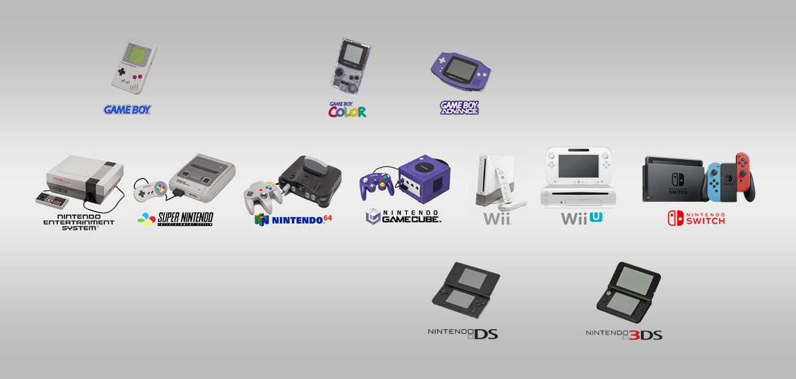
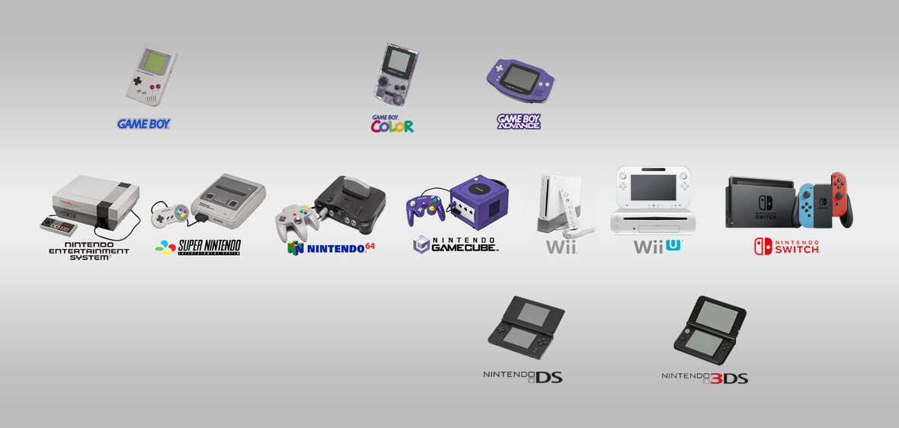

| Consolas |
Periodo |
Información |
| Color TV Game |
1977-1983 |
Esta fue la primera consola de videojuegos de Nintendo lanzada en el año 1977, pero solamente en Japón, se vendieron 3 millones de unidades. |
| Game&Watch |
1980-1995 |
Esta fue la primera consola portátil lanzada por Nintendo en el año 1980. Esta consola tuvo unos cuantos juegos populares Nintendo hoy en día como: Donkey Kong, The Legend of Zelda, Marío Bros y Mickey Mouse. La consola vendió 43,4 millones de unidades mundialmente. |
| Nintendo Entertainment System |
1983-1995 |
Es la segunda consola no portátil de Nintendo perteneciente a la tercera generación, Fue lanzada el 15 de julio de 1983. Se consideró la videoconsola más exitosa de su época. En el año 2016 le hicieron un remake con juegos integrado más populares de la saga. |
| Game Boy |
1988-1998 |
Es la segunda consola portátil de Nintendo lanzada el 21 de abril de 1989. Una de las mejores consolas portátiles en su época, se vendieron unas 118,69 millones de unidades. Esta consola tuvo diferente tipo de versiones tales como: Game Boy Pocket, Game Boy light, Game Boy Color y la Game Boy Advance. |
| Virtual Boy |
1995-1996 |
Esta fue de las primera consola con gráficos 3D,funciona como unas gafas de realidad virtual. Se lanzaron el 21 de julio de 1995, pero solamente duro 1 año en el mercado, se vendieron 770.000 unidades. Esto fue de los fracasos comerciales de Nintendo por el alto precio, efecto poco impresionante y problemas de salud. |
| Nintendo 64 |
1996-2004 |
Es la cuarta consola fabricada por Nintendo, se fabricó para suceder a la Super Nintendo. Fue la primera consola en dar el salto de 2D a 3D. Se lanzó el 23 de junio de 1996 y vendió 32,930,000 de unidades. Esta consola tuvo sus juegos más populares como Super Mario 64, Mario Kart 64 y otros. |
| Nintendo Gamecube |
2001-2008 |
Es la quinta consola de Nintendo lanzada el 14 de septiembre de 2001. Esta fue la primera consola de Nintendo en usar DVD para distribuir sus juegos. Se vendieron 21,740,000 de unidades y su juego más popular Super Smash Bros. Melee vendió 7 millones de copias. |
| Nintendo DS,3DS y 2DS |
2004-2020 |
El Nintendo Ds fue una consola portátil fabricada por Nintendo y lanzada el 21 de noviembre de 2004. Esta consola tiene numerosas versiones tales como el Nintendo DS.lite, NintendoDSi y el Nintendo DS i xl, estas consolas juntas vendieron 154,90 millones de unidades. Además de estos Ds lanzaron una consola DS mas avanzada como el Nintendo 3DS esta consola se lanzado el 25 de febrero de 2011, cuyo funcionamiento principal es mostrar gráficos 3D sin necesidad de gafas. De esta consola se lanzaron varias versiones como la Nintendo 3DSxl, Nintendo 2DS,New Nintendo 3DS,New Nintendo 3DSxl y el new Nintendo 2DSxl, todas estas consolas en conjunto vendieron unas 77,49 millones de consolas. |
| Nintendo Wii |
2006-2012 |
El Nintendo wii fue lanzado el 19 de noviembre de 2006 en Norteamérica y el 8 de diciembre del mismo año en Europa, Wii esta destinada a una audiencia mas amplia a diferencia de las otras consolas. La consola supero a sus competidoras en cuanto a ventas, en diciembre de 2009 rompió el récord como la consola mas vendida en un solo mes en Estados Unidos. Wii a vendido sobre 101 millones de consolas mundialmente. Uno de los últimos juegos lanzados para esta consola y mas vendido mundialmente fue Just Dance 2020 lanzado por Ubisoft el 5 de noviembre de 2020 en otro caso tenemos el Retro City Rampage DX+ exclusivo para América lanzado el 9 de julio de 2020. |
| Nintendo Wii U |
2012-2016 |
El Nintendo Wii U fue lanzado el 18 de noviembre de 2012 en el terreno norteamericano siendo esta su fecha de apertura. Esta se presentó en la conferencia de Nintendo durante electronic entertainment expo el 7 de junio de 2011 . Wii u fue la primera consola de Nintendo en producir gráficos en alta definición hasta una resolución de 1080p, esta unidad a vendido sobre 13,50 millones de consolas. A finales de mayo de 2017, Nintendo ceso la fabricación de la consola Wii U . Los últimos videojuegos publicados para la consola Wii U fueron The Legend of Zelda: Breath of the Wild en términos First-Party y Just Dance 2019. Ultimas noticias dicen que la consola recibió una actualización el día 2 de marzo de 2021, después de más de dos años sin tener novedades. |
| Nintendo Swicht |
2017-presente |
El Nintendo Switch se dio a conocer el 20 de octubre del 2016 y fue lanzada mundialmente el 3 de marzo de 2017. Nintendo vendió mas de 2,74 millones de unidades de la consola en su primer mes de estar en venta, esta se convirtió en la consola de sobremesa que mas rápido se ha vendido de su historia. Al cabo de dos años exactamente el 20 de septiembre de 2019 lanzaron al mercado una versión revisada de Nintendo Switch manteniendo el tamaño de la versión antigua pero con una mayor duración de batería. La mas reciente noticia fue dada el 6 de julio de 2021 donde Nintendo anuncio oficialmente un nuevo modelo, llamado Nintendo Switch OLED este fue lanzado el 8 de octubre de 2021 junto con el lanzamiento del juego Metroid Dread, con un precio de $349.99, la única diferencia de esta consola a las anteriores es que la pantalla es un poco mas grande. |
 
